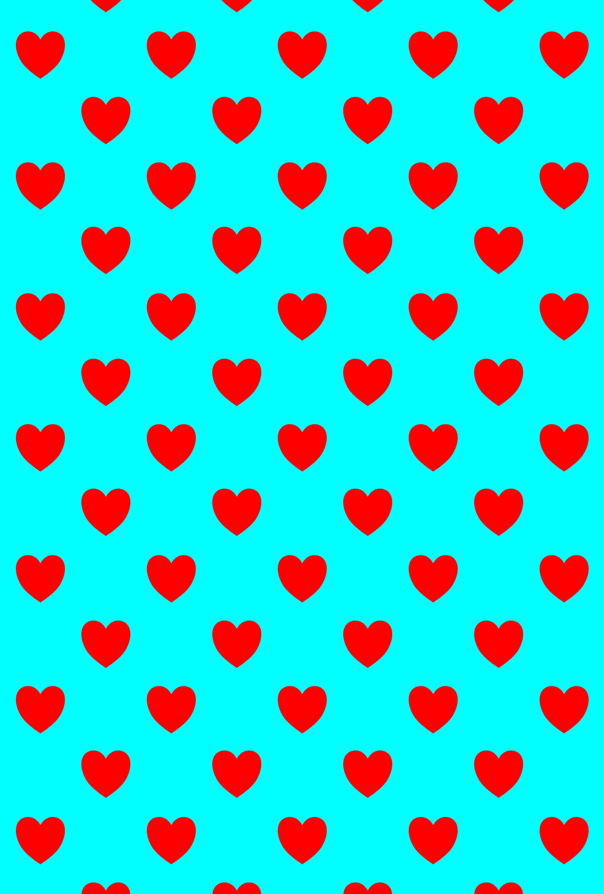
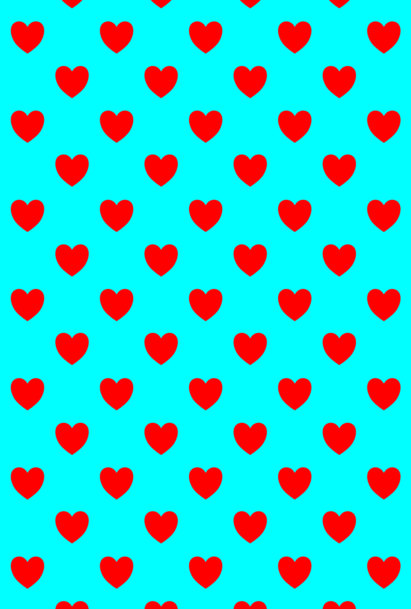
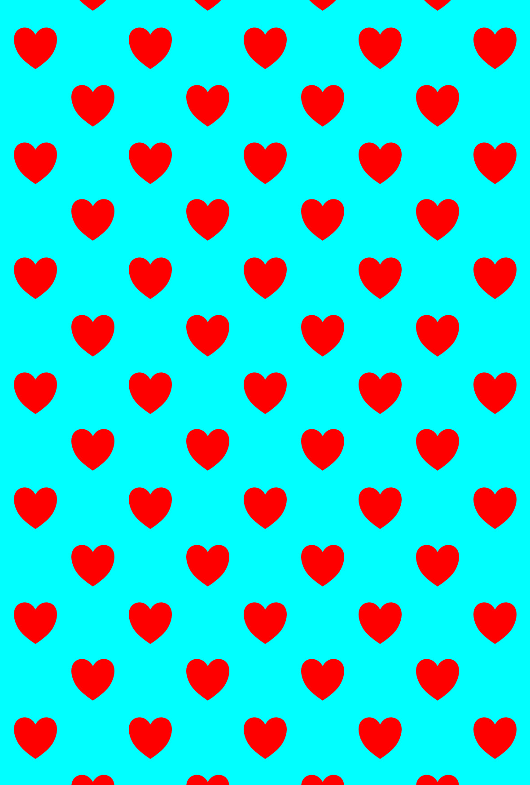
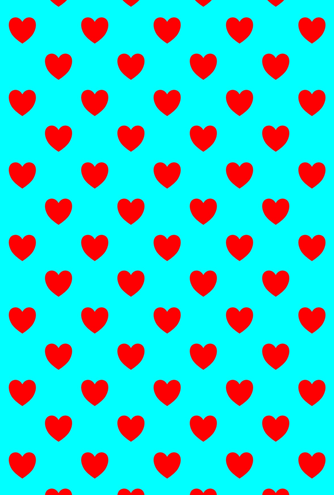
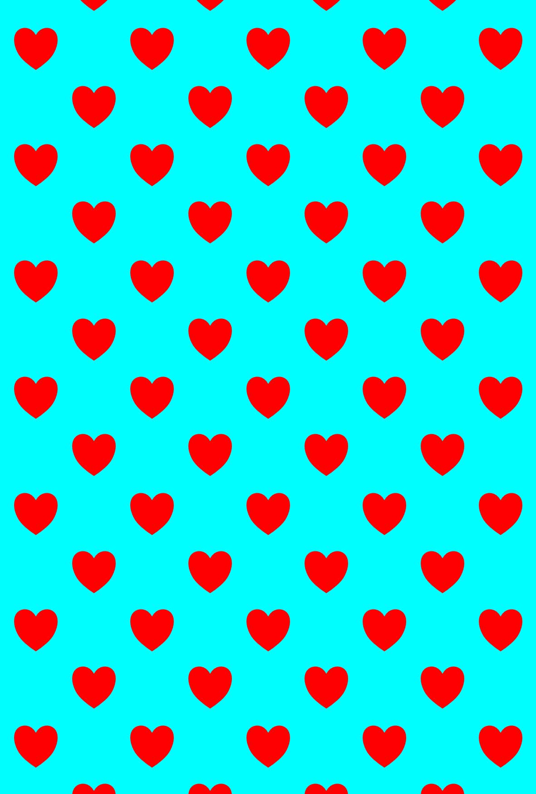
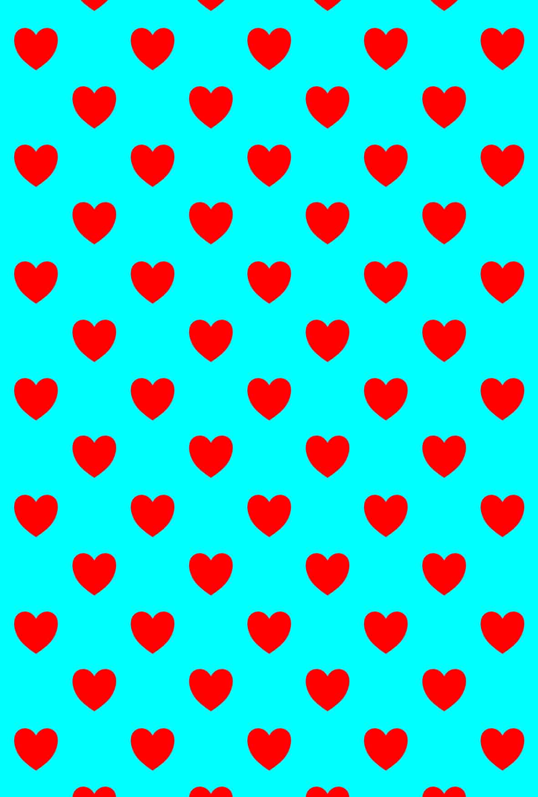
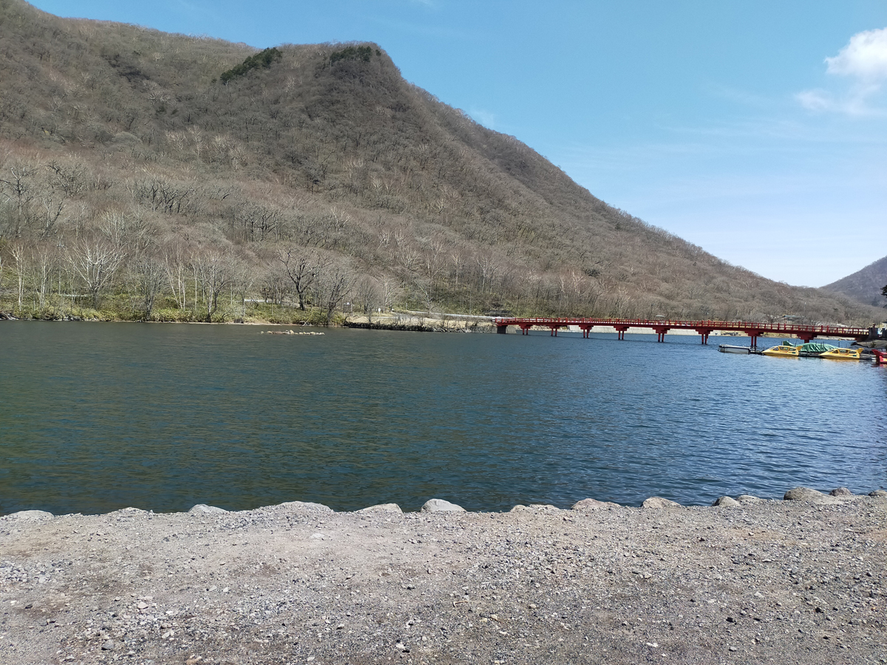
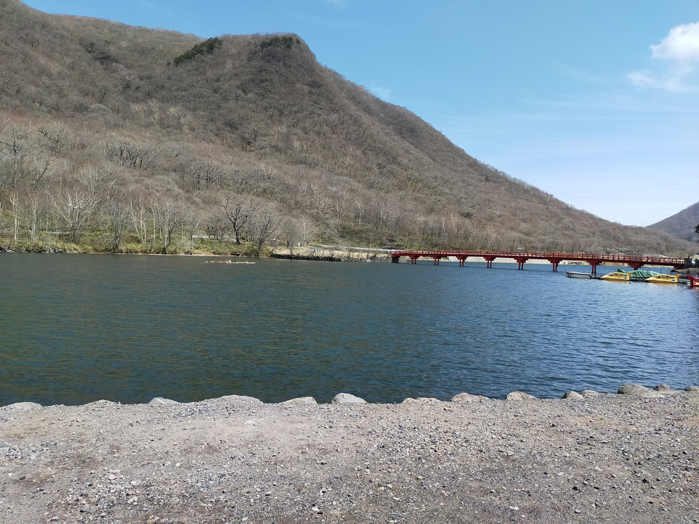
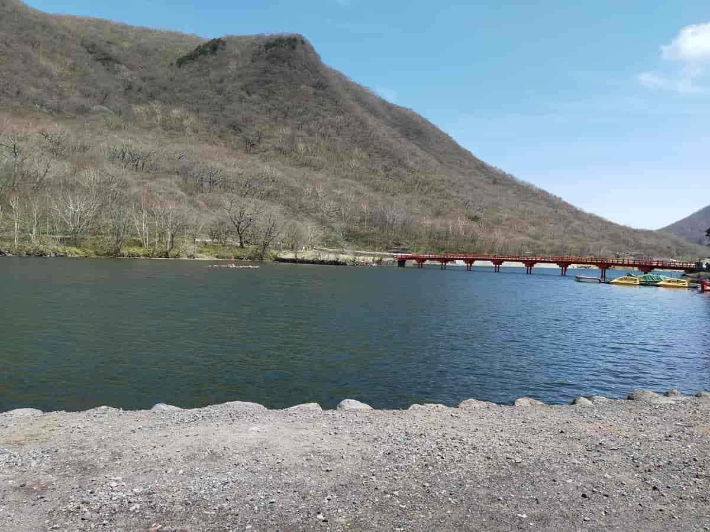

GitHub - mozilla/mozjpeg: Improved JPEG encoder.
Mozillaが公開しているJPEGエンコーダーで、libjpeg-turbo を元にしている。
cjpeg -outfile output.jpg input.jpg
入力(input)に対応しているのはJPEG、PNGファイル。
mozjpegで使用したコードは以下の通りです。
cjpeg -quality n -outfile output.jpg input.jpg
-quality の部分には0～100の数字を入れてください。
アニメ調(色が少ない)の画像から。

Adobe Photoshop Elements12で作成した画像(画質100: 542KB)

mozjpegで作成した画像(画質100: 469KB)

Adobe Photoshop Elements12で作成した画像(画質70: 261KB)

mozjpegで作成した画像(画質70: 78KB)

Adobe Photoshop Elements12で作成した画像(画質30: 108KB)

mozjpegで作成した画像(画質30: 45KB)
mozjpegの画質30はノイズがかなり目立つ結果になってしまいました。バランスを考えると画質70くらいまでが良さそうです。
Adobe Photoshop Elements12で作成した画像と比べると、ぼけています。
続いては写真(色が多い画像)。

Adobe Photoshop Elements12で作成した画像(画質100: 980KB)
mozjpegで作成した画像(画質100: 993KB)

Adobe Photoshop Elements12で作成した画像(画質70: 401KB)
mozjpegで作成した画像(画質70: 151KB)
Adobe Photoshop Elements12で作成した画像(画質30: 175KB)

mozjpegで作成した画像(画質30: 69KB)
mozjpegの画質30は写真でもノイズがかなり目立つ結果になってしまいました。アニメ調の画像と同じく、画質70くらいまでが良さそうです。